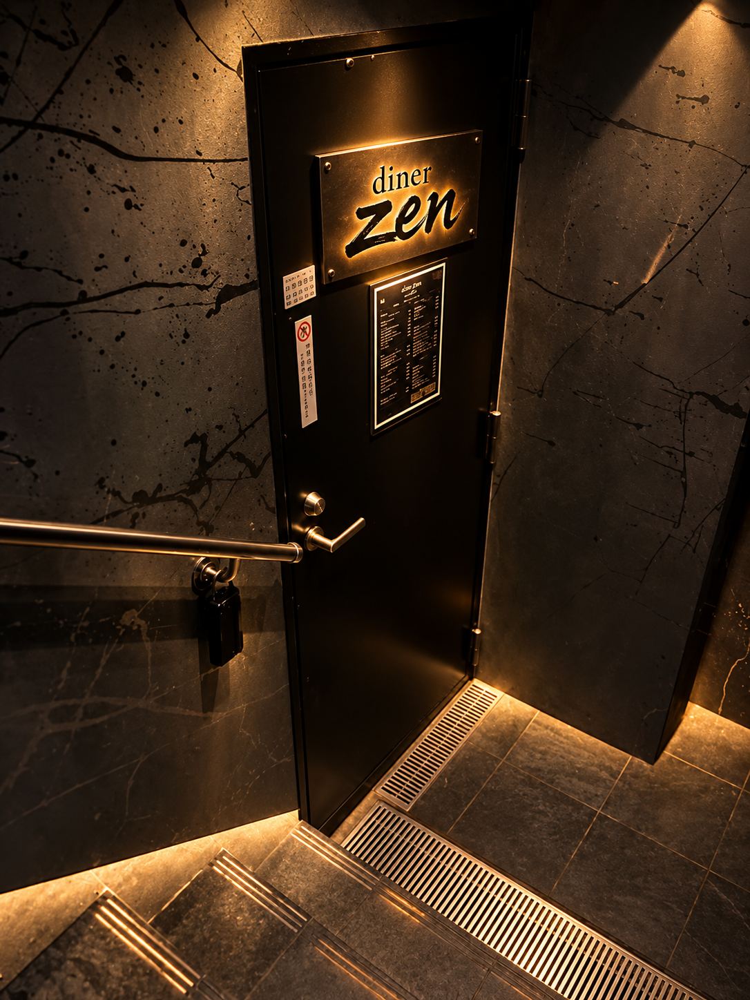
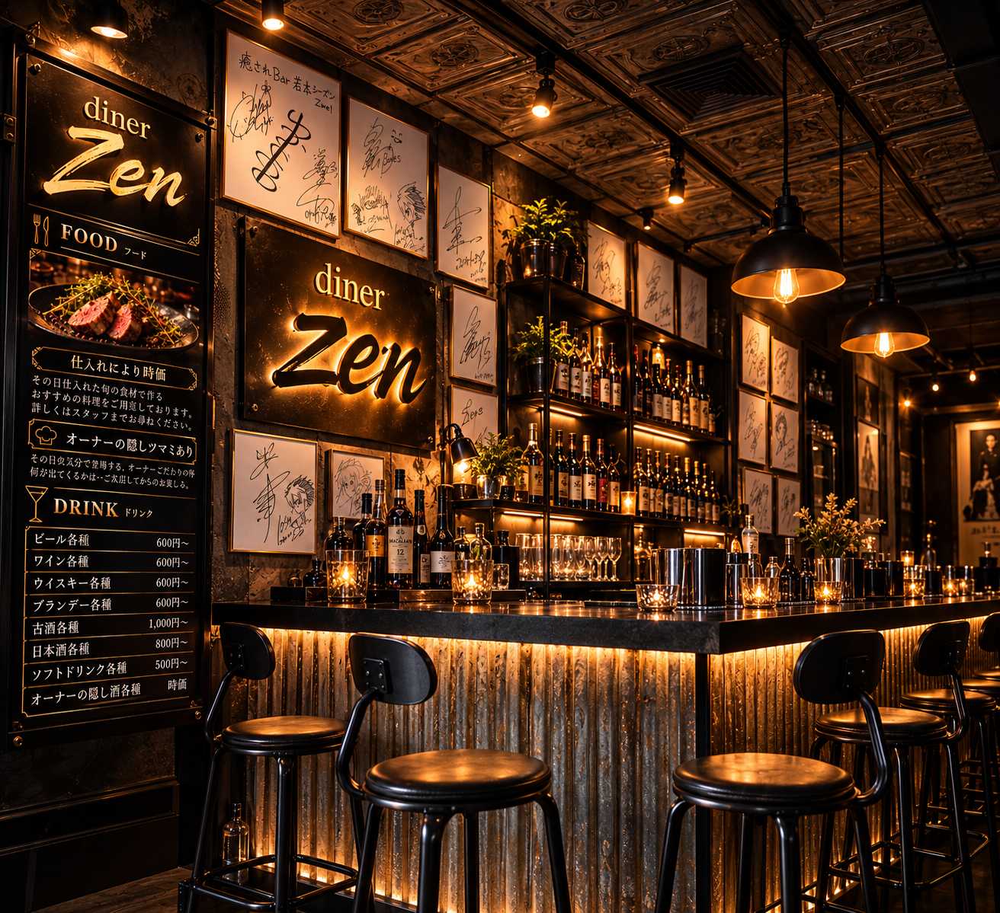
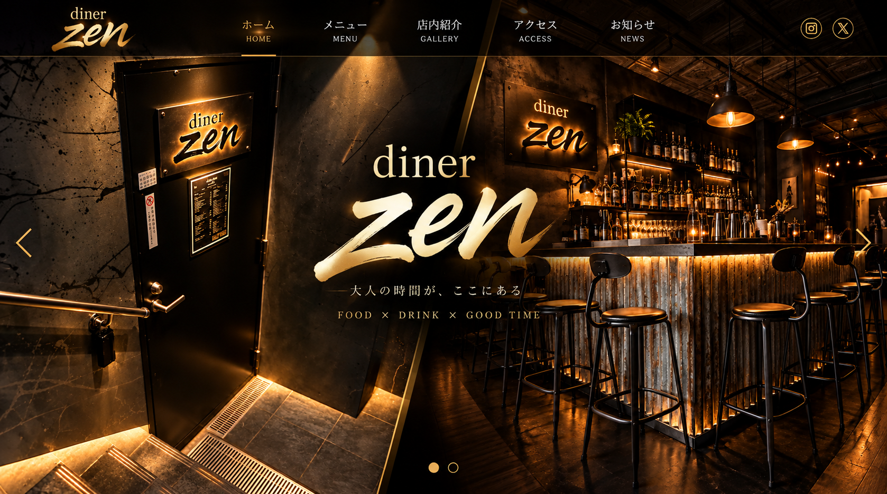
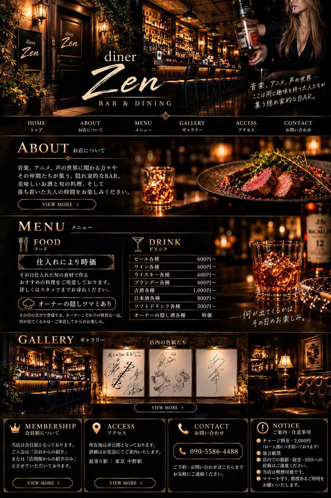

ABOUT
大人の隠れ家
中野駅から少し歩いた先にある、夜の隠れ家「diner Zen」。落ち着いた照明とカウンターを囲みながら、ゆっくり過ごせるBAR & DININGです。



MENU
FOOD & DRINK

GALLERY
店内とサイン色紙





ACCESS
中野駅から
SHOPdiner Zen｜BAR & DINING
AREA東京都・中野駅近く
OPEN21:00 ～ 朝方
TEL090-5586-4488